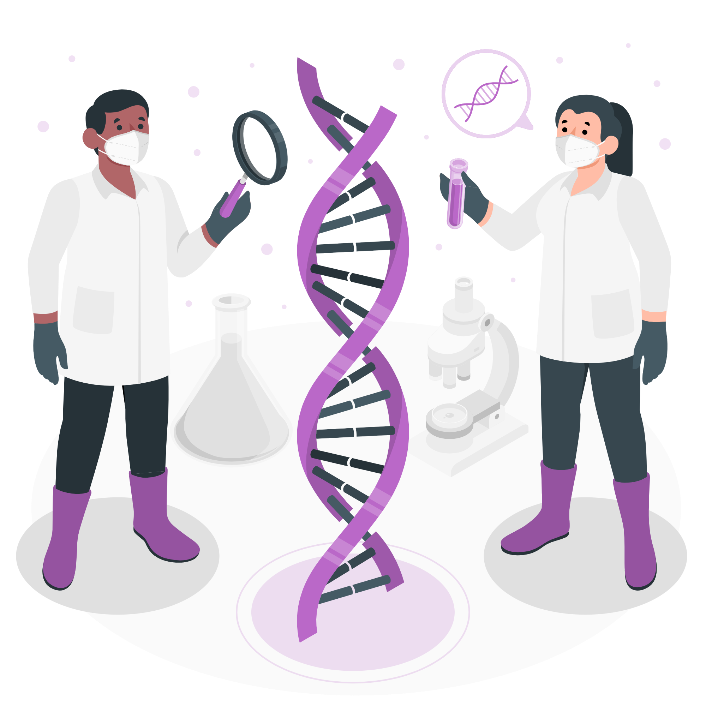

A clonagem é um processo artificial pautado na reprodução de cópias genéticas (organismos idênticos) de determinados seres vivos através de um filamento de DNA. Ao invés de utilizar os gametas sexuais masculinos (espermatozoides) e feminino (óvulos) érealizada usando as células somáticas. Em outras palavras, retira-se o núcleo da célula, e coloca-se no lugar uma célula somática. A primeira clonagem aconteceu em 1996, no Instituto Roslin, na Escócia, por um grupo de embriologistas liderado pelo doutor Ian Wilmut. Eles criaram o primeiro mamífero por meio da técnica chamada de “Clonagem Reprodutiva”, uma ovelha que ficou conhecida como “Dolly”, produzida através de uma célula somática de glândula mamária de um animal adulto.
Muitas questões giram em torna da ética e do processo de clonagens e, até hoje, não ficou efetivamente comprovada se foi realizada uma clonagem humana em laboratório. Depois da Dolly, muitos cientistas e a sociedade em geral refletiu sobre os benefícios e os prejuízos trazidos por esse processo. A princípio, a engenharia genética aliada à medicina, apostam na clonagem como forma de beneficiar grande parte da população, seja na diminuição do número de pessoas necessitadas pelo transplantes de órgãos, ao criar órgãos e células, ou na cura e no tratamento de determinadas enfermidades, defeitos genéticos ou casos de infertilidade. Por outro lado, a questão ética e religiosa levanta questões sobre a clonagem de seres humanos e muitos estudiosos acreditam que esse processo, futuramente, pode afetar a individualidade dos indivíduos, gerar preconceito e, ademais, beneficiará apenas uma parcela da população, uma vez que a clonagem é muito cara e se tornará um comércio. Dessa forma, espera-se que a ciência tenha como princípio o respeito aos valores morais e éticos.
Seres idênticos que possuem o mesmo genoma.
Reprodução assexuada realizada em laboratório através de duas células mães.
Processo de reprodução assexuada através de células somáticas.
Utilizada para a reprodução de células-tronco, contudo, não é introduzida no útero.